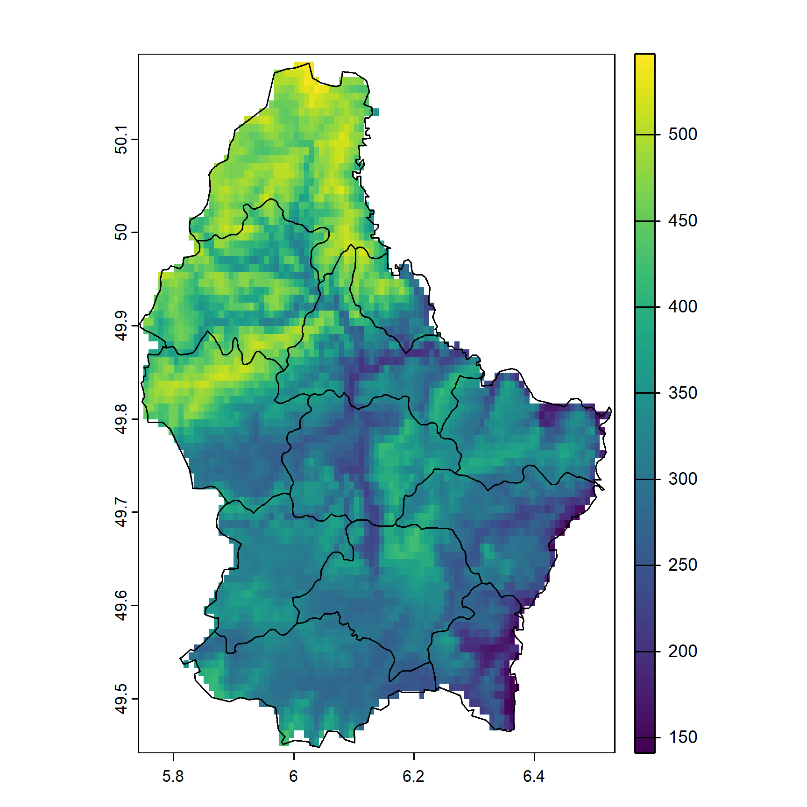
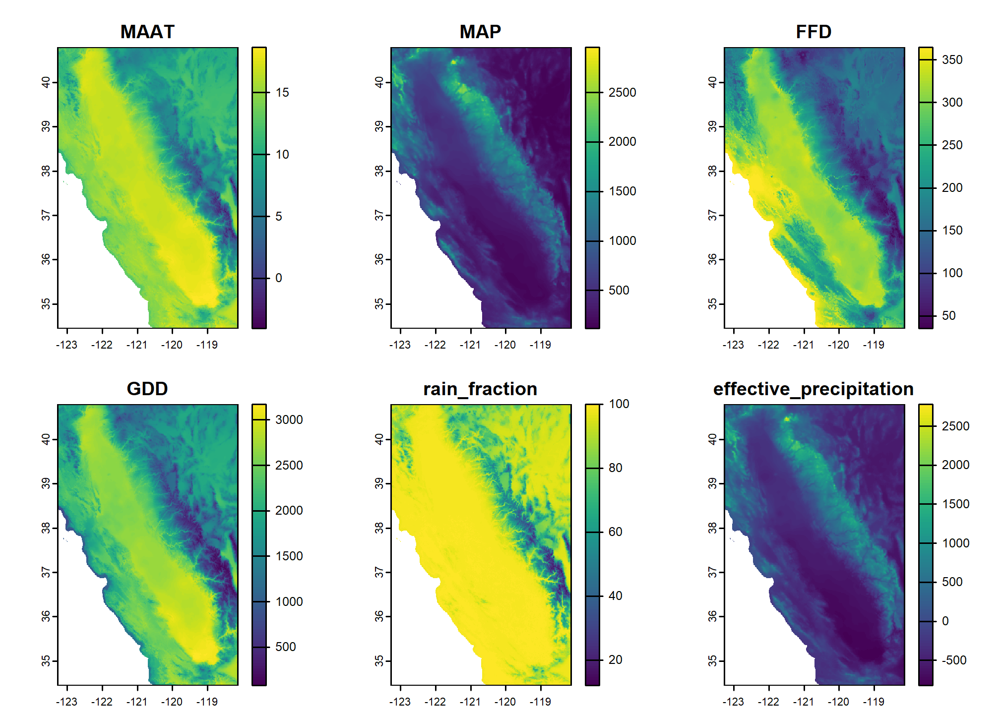
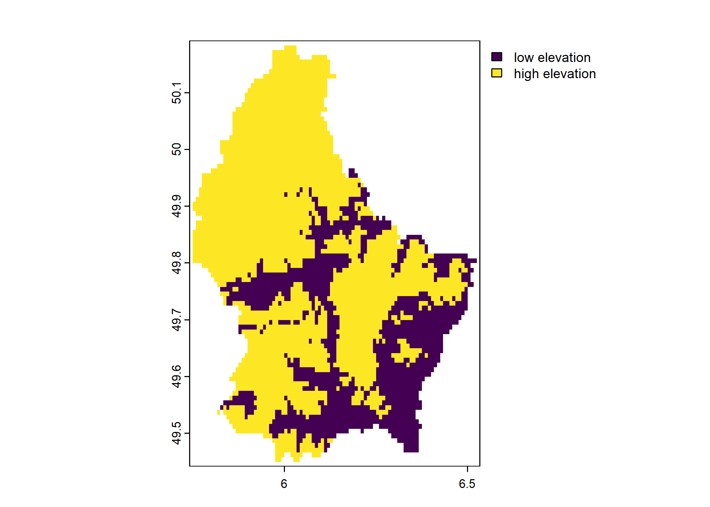
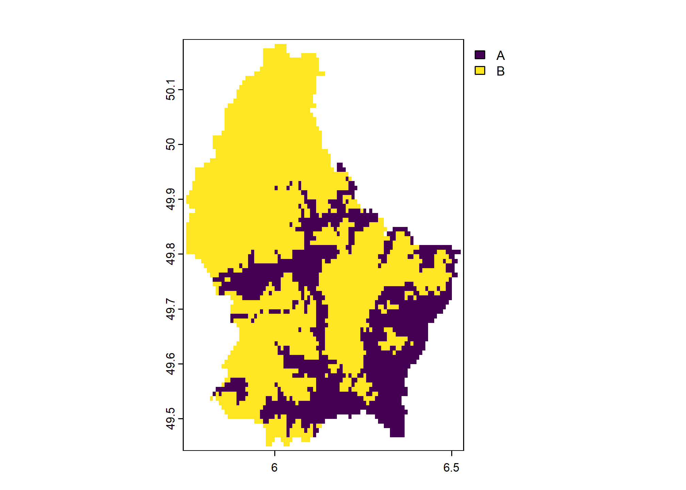
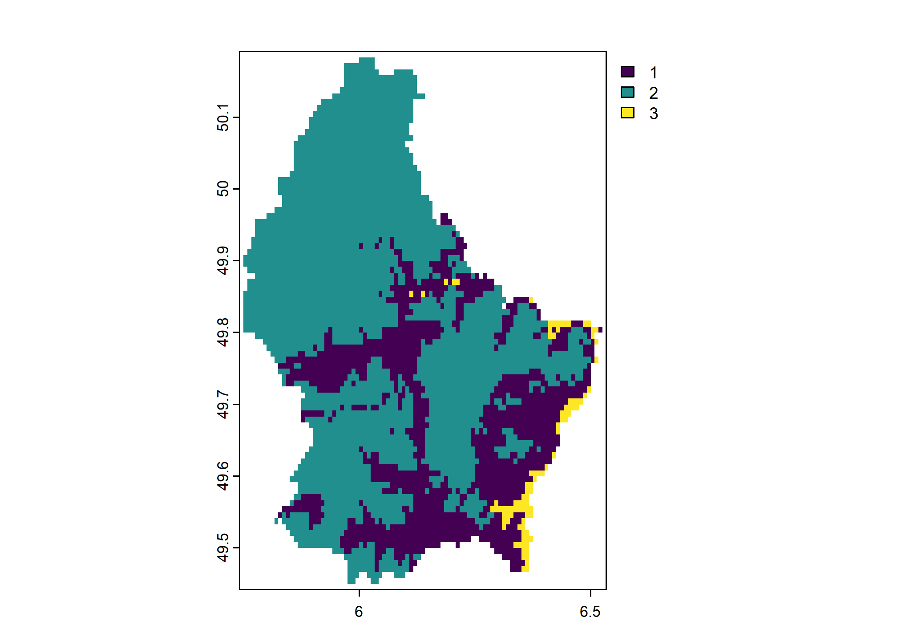
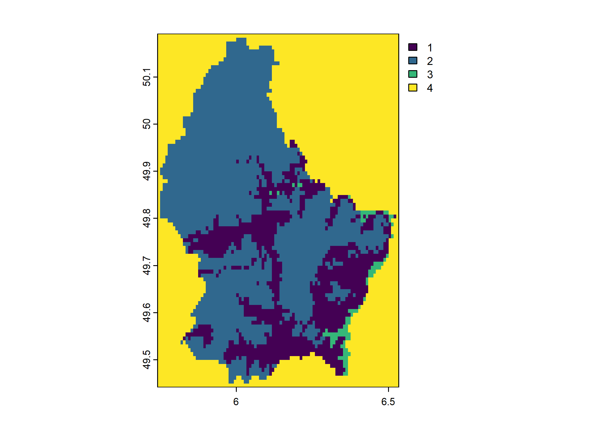
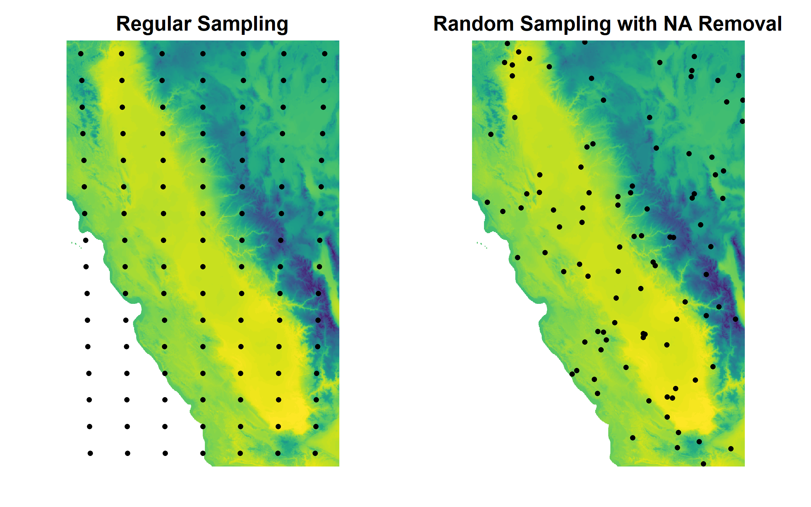
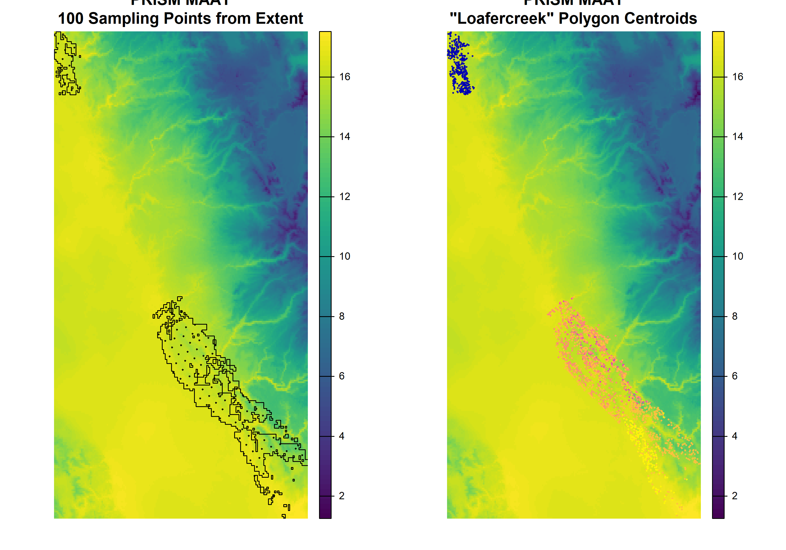
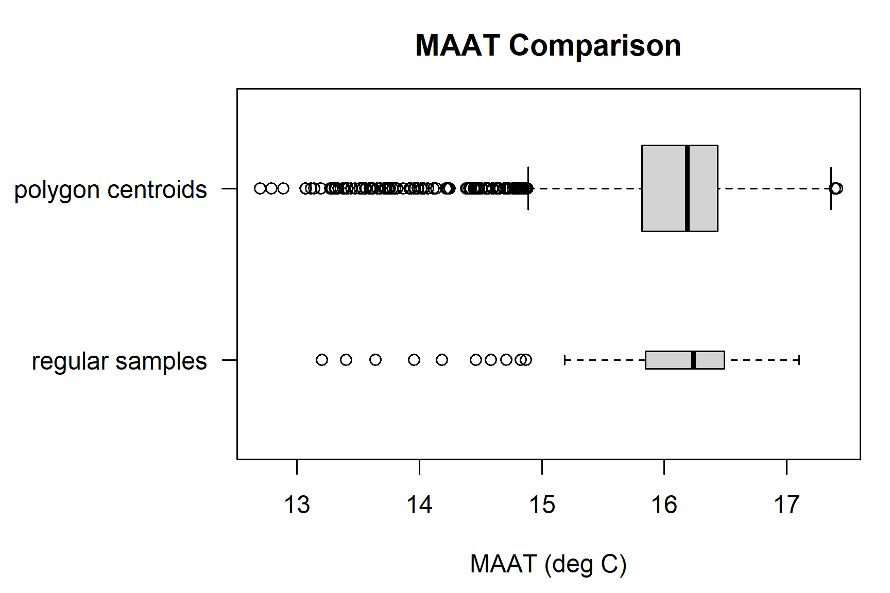
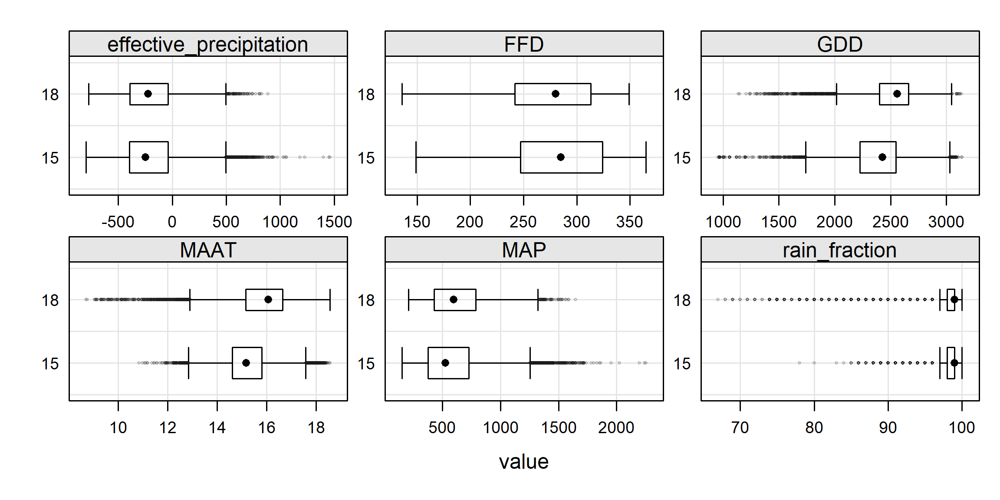

Chapter 4 Spatial Data in R

This chapter is a brief demonstration of possible ways to process spatial data in R. This will help you to develop a strategy for selecting spatial data processing methods.
4.1 Objectives (Spatial Data)
Gain experience creating, editing, and exporting spatial data objects in R.
- Learn the basics of
sfpackage for vector (points, lines, polygons) data - Learn the basics of
terraclasses and functions for vector and raster data - Learn about some interfaces to NCSS spatial data sources
- Learn the basics of
Create maps with R
The next sections will require loading these libraries into the R session.
# SPC and soil database interface
library(aqp)
library(soilDB)
# "Simple Feature" (vector) data structures
library(sf)
# superseded by sf -- spatial object classes e.g. SpatialPoints/SpatialPolygons
library(sp)
# gridded data management / analysis
library(terra)
# superseded by terra
# library(raster)
# interactive maps with leaflet
library(mapview)There are many packages available for working with spatial data, however we only have time to cover introducing a few common libraries.
A couple resources are linked here for 5 packages that provide different ways displaying spatial data graphically:
4.2 Making Maps with R

R has become a powerful tool for visualization and interaction with spatial data. There are many tools available for making maps with R! It is not all geostatistics and coordinate reference system transformations. There are powerful ways to automate your GIS workflow from beginning to end–from creating terrain derivatives from a source DEM, to high-quality, publication-ready maps and interactive HTML/JavaScript widgets.
An excellent resource for making maps with R is the chapter in “Geocomputation with R”
4.3 Spatial Data Sources
Spatial data sources: “raster” and “vector”
- Raster data sources (grids/images): GeoTIFF, ERDAS, BIL, ASCII grid, WMS, …
- Vector data sources (points/lines/polygons): Shape File, ESRI File Geodatabase, KML, GeoJSON, GML, WFS, …
Conventional data sources that can be upgraded to be spatial data because they contain GeoJSON, WKT, or point coordinates include:
- NASIS/LIMS reports
- Web pages and Web Services
- Excel and CSV files
- Photo EXIF information
Here are some R-based interfaces to NCSS data sources via soilDB package.
Functions that return tabular data contain longitude, latitude coordinates:
fetchNASIS(): NASIS “site” datafetchLDM(): KSSL “site” data from Lab Data MartfetchKSSL(): KSSL “site” data from SoilWeb
Functions that return spatial data:
fetchSDA_spatial(): polygon, bounding box and centroid data from SSURGO, STATSGO and thesapolygon(Soil Survey Area Polygon) from Soil Data Access (SDA)fetchHenry(): sensor / weather station locations as pointsSDA_query(): SSURGO data as points, lines, polygons (via SDA)SDA_spatialQuery(): use points or polygons as a “query” to SDAseriesExtent()andtaxaExtent(): extent of series and taxonomic classes derived from SSURGO (SoilWeb) in vector and raster format (800m resolution). The vector output is identical to series extents reported by Series Extent Explorermukey.wcs()andISSR800.wcs()provide an interface to gSSURGO (mukey), gNATSGO (mukey), and the ISSR-800 (gridded soil property) data.
4.4 Viewing Pedon Locations
In this section we will introduce the sf package with mapview.
4.4.1 Plotting Geographic Data
Making maps of data gives you some idea how data look spatially and whether their distribution is what you expect.
Typos are relatively common when coordinates are manually entered. Viewing the data spatially is a quick way to see if any points plot far outside of the expected geographic area of interest.
# plot the locations of the gopheridge pedons with R
#
# Steps:
# 1) create and inspect an sf data.frame object
# 2) plot the data with mapview
# load libraries
library(aqp)
library(soilDB)
library(sf)
library(mapview)
# this creates sample gopheridge object in your environment
data("gopheridge", package = "soilDB")
# replace gopheridge object with fetchNASIS() (your data)
# gopheridge <- fetchNASIS()
# create simple features POINT geometry data.frame
# st_as_sf(): convert data.frame to spatial simple features, with points in $geometry
# st_crs(): set EPSG:4326 Coordinate Reference System (CRS) as Well-Known Text (WKT)
gopher.locations <- st_as_sf(
site(gopheridge),
coords = c('longstddecimaldegrees','latstddecimaldegrees'),
crs = st_crs(4326)
)
# create interactive map with sfc_POINT object
# use site_id in sf data.frame as labels
mapview(gopher.locations, label = gopher.locations$site_id)4.5 Exercise 1: Pedon Locations
In this exercise, you will create an interactive map with the pedons in your selected set. Then you will export them to a shapefile. Send a screenshot of your interactive map and your R script with any comments to your mentor.
Modify the code snippets below to make an R plot and a shapefile of pedon data loaded from your NASIS selected set. You will plot pedon locations using the standard WGS84 longitude/latitude decimal degrees fields from Site table of NASIS. In some cases, these data might be incomplete. You will create a subset SoilProfileCollection for the pedons that have complete spatial data (longstddecimaldegrees and latstddecimaldegrees).
- Load the
aqp,soilDB,sfandmapviewpackages and some pedons viafetchNASIS()(or similar source). You can use the sample datasets from Chapter 2 if you would like.
library(aqp)
library(soilDB)
library(sf)
library(mapview)
# get pedons from the selected set
pedons <- fetchNASIS(from = 'pedons')- Use the base R
subset()function to create a subset of your SoilProfileCollection usingis.na()to detect missing spatial data.
longstddecimaldegreesandlatstddecimaldegreesvariables contain WGS84 longitude and latitude in decimal degrees. This is the standard format for location information used in NASIS.
# modify this code (replace ...) to create a subset
pedons.sp <- aqp::subset(pedons, ...)- Create a
sfdata.frame from the site data in the SoilProfileCollection objectpedons.spusingaqp::site(). Replace the...in the following code. Promoting a data.frame to sf POINT geometry requires that X and Y coordinate columns be specified.
pedon.locations <- sf::st_as_sf(
...,
coords = c('longstddecimaldegrees', 'latstddecimaldegrees'),
crs = sf::st_crs(4326) #WGS84 GCS
)- View your
sfobjectpedon.locationsinteractively withmapview::mapview(), and change themap.typesargument to'Esri.WorldImagery'. Use thepedon.locationscolumn namedsite_idfor thelabelargument.
# plot an interactive map
mapview(pedon.locations,
legend = FALSE,
map.types = 'OpenStreetMap',
...)- Create a subset
sfdata.frame with only the following “site data” columns:pedlabsampnum,upedonid,taxonname,hillslopeprof,elev_field,slope_field,aspect_field,plantassocnm,bedrckdepth,bedrckkind,pmkind,pmorigin. Select the target columns withdplyr::select()(or another method) by replacing the...in the following code.
pedon.locations_sub <- dplyr::select(pedon.locations, ...)
# see also base::subset(x, select=...)- Export the spatial information in
pedon.locations_subto a shape file (.shp) withsf::st_write()
4.6 Packages for Vector Data
4.6.1 The sf package
Simple Features Access is a set of standards that specify a common storage and access model of geographic features. It is used mostly for two-dimensional geometries such as point, line, polygon, multi-point, multi-line, etc.
This is one of many ways of modeling the geometry of shapes in the real world. This model happens to be widely adopted in the R ecosystem via the sf package, and very convenient for typical data encountered by soil survey operations.
The sf package represents the latest and greatest in spatial data processing within the comfort of an R session. It provides a “main” object class sf to contain geometric data and associated tabular data in a familiar data.frame format. sf methods work on a variety of different levels of abstraction and manipulation of those geometries.
Most of the sf package functions start with the prefix st_, such as: st_crs() (get/set coordinate reference system), st_transform() (project feature class to different coordinate reference system), st_bbox() (bounding box), st_buffer() (buffer). Many of these are “verbs” that are common GIS operations.
4.6.2 The sp Package
The data structures (“classes”) and functions provided by the sp package have served a foundational role in the handling of spatial data in R for years.
Many of the following examples will reference names such as SpatialPoints, SpatialPointsDataFrame, and SpatialPolygonsDataFrame. These are specialized (S4) classes implemented by the sp package.
Objects of these classes maintain linkages between all of the components of spatial data. For example, a point, line, or polygon feature will typically be associated with:
- coordinate geometry
- bounding box
- coordinate reference system
- attribute table
4.6.3 Converting sp and sf
sp provides access to the same compiled code libraries (PROJ, GDAL, GEOS) through sf package.
For now the different package object types are interchangeable, and you may find yourself having to do this for a variety of reasons. You can convert between object types as needed using sf::as_Spatial() or sf::st_as_sf().
Check the documentation (?functionname) to figure out what object types different methods need as input; and check an input object’s class with class() or inherits().
4.6.4 Importing / Exporting Vector Data
Import a feature class from a ESRI File Geodatabase or shape file.
If you have a .shp file, you can specify the whole path, including the file extension in the dsn argument, or just the folder.
For a Geodatabase, you should specify the feature class using the layer argument. Note that a trailing “/” is omitted from the dsn (data source name) and the “.shp” suffix is omitted from the layer.
4.6.5 Interactive mapping with mapview and leaflet
The mapview and leaflet packages make it possible to display interactive maps of sf objects in RStudio viewer pane, or within an HTML document generated via R Markdown (e.g. this document).
mapviewpackage- Basics
- Advanced Features
- See other “Articles” in this series, you can make complex, interactive maps using the
mapviewpackage.
leafletpackageleafem: ‘leaflet’ Extensions for ‘mapview’
4.7 Exercise 2: Map your favorite soil series extents
The seriesExtent function in soilDB returns an sf object showing generalized extent polygons for a given soil series.
# load required packages, just in case
library(soilDB)
library(sf)
library(mapview)
# series extents from SoilWeb (sf objects)
pentz <- seriesExtent('pentz')
amador <- seriesExtent('amador')
# combine into a single object
s <- rbind(pentz, amador)# colors used in the map
# add more colors as needed
cols <- c('royalblue', 'firebrick')
# make a simple map, colors set by 'series' column
mapview(s, zcol = 'series', col.regions = cols, legend = TRUE)The following code demonstrates how to fetch / convert / map soil series extents, using a vector of soil series names.
Results appear in the RStudio “Viewer” pane. Be sure to try the “Export” and “show in window” (next to the broom icon) buttons.
# load required packages, just in case
library(soilDB)
library(sf)
library(mapview)
# vector of series names, letter case does not matter
# try several (2-9)!
series.names <- c('auberry', 'sierra', 'holland', 'cagwin')
# iterate over series names, get extent
# result is a list of sf objects
s <- lapply(series.names, soilDB::seriesExtent)
# flatten list -> single sf object
s <- do.call('rbind', s)
# colors used in the map
# note trick used to dynamically set the number of colors
cols <- RColorBrewer::brewer.pal(n = length(series.names), name = 'Set1')
# make a simple map, colors set by 'series' column
# click on polygons for details
# try pop-out / export buttons
mapview(s, zcol = 'series', col.regions = cols, legend = TRUE)Question: What do you notice about the areas where the extent polygons occur? Share your thoughts with your peers or mentor
4.8 Packages for Raster Data
4.8.1 The terra Package
The terra package package provides most of the commonly used grid and vector processing functionality that one might find in a conventional GIS. It provides high-level data structures and functions for the GDAL (Geospatial Data Abstraction Library).
resampling (
terra::resample())projection and warping (
terra::project())cropping, mosaicing, masking (
terra::crop(),terra::mosaic(),terra::merge(),terra::mask())local and focal functions (
terra::local(),terra::focal())raster algebra (arithmetic operators,
terra::xapp())sampling (
terra::spatSample())contouring (
terra::contour())raster/vector conversions (
terra::rasterize(),terra::as.polygons())terrain analysis (
terra::terrain())model-based prediction and interpolation (
terra::predict(),terra::interpolate(); more on this in Part 2)
4.8.1.1 Terra Example
This is a brief demonstration using sample data files with terra.
# use an example from the terra package
f <- system.file("ex", "elev.tif", package = "terra")
# corresponding luxembourg vector (polygon) data
g <- system.file("ex", "lux.shp", package = "terra")
r <- terra::rast(f)
r## class : SpatRaster
## dimensions : 90, 95, 1 (nrow, ncol, nlyr)
## resolution : 0.008333333, 0.008333333 (x, y)
## extent : 5.741667, 6.533333, 49.44167, 50.19167 (xmin, xmax, ymin, ymax)
## coord. ref. : lon/lat WGS 84 (EPSG:4326)
## source : elev.tif
## name : elevation
## min value : 141
## max value : 547## class : SpatVector
## geometry : polygons
## dimensions : 12, 6 (geometries, attributes)
## extent : 5.74414, 6.528252, 49.44781, 50.18162 (xmin, xmax, ymin, ymax)
## source : lux.shp
## coord. ref. : lon/lat WGS 84 (EPSG:4326)
## names : ID_1 NAME_1 ID_2 NAME_2 AREA POP
## type : <num> <chr> <num> <chr> <num> <num>
## values : 1 Diekirch 1 Clervaux 312 1.808e+04
## 1 Diekirch 2 Diekirch 218 3.254e+04
## 1 Diekirch 3 Redange 259 1.866e+04## class : SpatRaster
## dimensions : 90, 95, 1 (nrow, ncol, nlyr)
## resolution : 0.008333333, 0.008333333 (x, y)
## extent : 5.741667, 6.533333, 49.44167, 50.19167 (xmin, xmax, ymin, ymax)
## coord. ref. : lon/lat WGS 84 (EPSG:4326)
## source : elev.tif
## name : elevation
## min value : 141
## max value : 547
The R object only stores a reference to the data until they are needed to be loaded into memory. This allows for internal raster manipulation algorithms to intelligently deal with very large grids that may not fit in memory.
4.8.1.2 Other approaches to raster data
4.8.1.2.1 raster
A more complete background on the capabilities of the raster package, and the replacement terra, are described in the Spatial Data Science with R online book.
## class : RasterLayer
## dimensions : 90, 95, 8550 (nrow, ncol, ncell)
## resolution : 0.008333333, 0.008333333 (x, y)
## extent : 5.741667, 6.533333, 49.44167, 50.19167 (xmin, xmax, ymin, ymax)
## crs : +proj=longlat +datum=WGS84 +no_defs
## source : elev.tif
## names : elevation
## values : 141, 547 (min, max)Introduction to the raster package vignette
4.8.1.2.2 stars
There is also a package called stars (Spatiotemporal Arrays: Raster and Vector Datacubes) that is the sf-centric way of dealing with higher dimensional raster and vector “datacubes.” Data cubes have additional dimensions related to time, spectral band, or sensor type. The stars data structures are often used for processing spectral data sources from satellites.
4.8.3 Converting Raster to Vector
4.8.3.1 terra::as.polygons()
4.9 Coordinate Reference Systems (CRS)
Spatial data aren’t all that useful without an accurate description of the Coordinate Reference System (CRS). This type of information is typically stored within the “.prj” component of a shapefile, or in the header of a GeoTIFF.
Without a CRS it is not possible to perform coordinate transformations (e.g. conversion of geographic coordinates to projected coordinates), spatial overlay (e.g. intersection), or geometric calculations (e.g. distance or area).
The “old” way (PROJ.4) of specifying coordinate reference systems is using character strings containing, for example: +proj or +init arguments. In general, this still “works,” so you may encounter it and need to know about it. But you also may encounter cases where CRS are specified using integers, strings of the form authority:code, or well-known text (WKT).
Some common examples of coordinate system “EPSG” codes and their legacy “PROJ.4” strings. 4
“EPSG” stands for European Petroleum Survey Group. The “EPSG Geodetic Parameter Dataset” is a public registry of geodetic datums, spatial reference systems, Earth ellipsoids, coordinate transformations and related units of measurement.
“OGC” refers to the Open Geospatial Consortium, which is an example of another important
authority:code. “ESRI” (company that develops ArcGIS) also defines many CRS codes.“PROJ” is the software responsible for transforming coordinates from one CRS to another. The current version of PROJ available is 9, and in PROJ > 6 major changes were made to the way that coordinate reference systems are defined and transformed led to the “PROJ.4” syntax falling out of favor.
EPSG:
4326/ PROJ.4:+proj=longlat +datum=WGS84- geographic, WGS84 datum (NASIS Standard)OGC:
CRS84- geographic, WGS84 datum (same as above but explicit longitude, latitude XY order)EPSG:
4269/ PROJ.4:+proj=longlat +datum=NAD83- geographic, NAD83 datumEPSG:
4267/ PROJ.4:+proj=longlat +datum=NAD27- geographic, NAD27 datumEPSG:
26910/ PROJ.4:+proj=utm +zone=10 +datum=NAD83- projected (UTM zone 10), NAD83 datumEPSG:
5070/ PROJ.4:+proj=aea +lat_1=29.5 +lat_2=45.5 +lat_0=23.0 +lon_0=-96 +x_0=0 +y_0=0 +datum=NAD83 +units=m +no_defs- Albers Equal Area CONUS (gSSURGO)More on the EPSG codes and specifics of CRS definitions:
While you may encounter PROJ.4 strings, these are no longer considered the preferred method of referencing Coordinate Reference Systems – and, in general, newer methods are “easier.”
Well-known text (WKT) is a human- machine-readable standard format for geometry, so storing the Coordinate Reference System information in a similar format makes sense. This format is returned by the sf::st_crs() method.
For example: the WKT representation of EPSG:4326:
## Coordinate Reference System:
## User input: EPSG:4326
## wkt:
## GEOGCRS["WGS 84",
## ENSEMBLE["World Geodetic System 1984 ensemble",
## MEMBER["World Geodetic System 1984 (Transit)"],
## MEMBER["World Geodetic System 1984 (G730)"],
## MEMBER["World Geodetic System 1984 (G873)"],
## MEMBER["World Geodetic System 1984 (G1150)"],
## MEMBER["World Geodetic System 1984 (G1674)"],
## MEMBER["World Geodetic System 1984 (G1762)"],
## MEMBER["World Geodetic System 1984 (G2139)"],
## MEMBER["World Geodetic System 1984 (G2296)"],
## ELLIPSOID["WGS 84",6378137,298.257223563,
## LENGTHUNIT["metre",1]],
## ENSEMBLEACCURACY[2.0]],
## PRIMEM["Greenwich",0,
## ANGLEUNIT["degree",0.0174532925199433]],
## CS[ellipsoidal,2],
## AXIS["geodetic latitude (Lat)",north,
## ORDER[1],
## ANGLEUNIT["degree",0.0174532925199433]],
## AXIS["geodetic longitude (Lon)",east,
## ORDER[2],
## ANGLEUNIT["degree",0.0174532925199433]],
## USAGE[
## SCOPE["Horizontal component of 3D system."],
## AREA["World."],
## BBOX[-90,-180,90,180]],
## ID["EPSG",4326]]This is using the OGC WKT CRS standard. Adoption of this standard caused some significant changes in packages in the R ecosystem.
So you can get familiar, what follows are several examples of doing the same thing: setting the CRS of spatial objects with WGS84 longitude/latitude geographic coordinates. If you have another target coordinate system, it is just a matter of using the correct codes to identify it.
4.9.1 Assigning and Transforming Coordinate Systems
Returning to the example from above, lets assign a CRS to our series extent s using different methods.
The following sections give equivalent sf versus sp syntax.
4.9.1.1 sf
Use st_crs<- to set, or st_crs() get CRS of sf objects. Supply the target EPSG code as an integer.
## [1] TRUETransformation of points, lines, and polygons with sf requires an “origin” CRS be defined in the argument x. The “target” CRS is defined as an integer (EPSG code) in the crs argument or is the output of st_crs().
4.9.1.2 sp
You can do the same thing several different ways with sp objects. An equivalent EPSG, OGC and PROJ.4 can be set or get using proj4string<-/proj4string and either a sp CRS object or a PROJ.4 string for Spatial objects.
# s is an sf object (we converted it), convert back to Spatial* object
s.sp <- sf::as_Spatial(s)
# these all create the same internal sp::CRS object
proj4string(s.sp) <- sp::CRS('EPSG:4326') # proj >6; EPSG
proj4string(s.sp) <- sp::CRS('OGC:CRS84') # proj >6; OGC
proj4string(s.sp) <- '+init=epsg:4326' # proj 4 style +init string (deprecated)
proj4string(s.sp) <- '+proj=longlat +datum=WGS84' # proj 4 style +proj stringHere, we do the same transformations we did above only using sp::spTransform().
4.9.1.3 terra and raster
To assign or get the coordinate reference system for raster, terra or sp CRS objects use the crs() functions.
r <- terra::rast(system.file("ex", "elev.tif", package="terra"))
# inspect CRS
terra::crs(r)
# r is a SpatRaster object; set CRS to current CRS
terra::crs(r) <- terra::crs("OGC:CRS84")“Transforming” or “warping” a raster is a different from with a vector as it requires interpolation of pixels to a target resolution and CRS.
The method provided by terra is project() and in raster it is projectRaster().
It works the same as the above “transform” methods in that you specify an object to transform, and the target reference system or a template for the object.
t.wgs84 <- terra::project(r, terra::crs("+proj=igh"))
r.wgs84 <- raster::projectRaster(raster::raster(r), crs = CRS("+proj=igh"))Note that the default warping of raster uses bilinear interpolation (method='bilinear'), which is appropriate for continuous variables.
You also have the option of using nearest-neighbor (method='ngb') for categorical variables (class maps) where interpolation would not make sense.
If we want to save this transformed raster to file, we can use something like this for terra
Similarly for raster:
4.10 Load Required Packages
Load required packages into a fresh RStudio Session (Ctrl + Shift + F10)
4.11 Download Example Data
Run the following to create a path for the example data. Be sure to set a valid path to a local disk.
# store path as a variable, in case you want to keep it somewhere else
ch4.data.path <- 'C:/workspace2/chapter-4'
# make a place to store chapter 2b example data
dir.create(ch4.data.path, recursive = TRUE)
# download polygon example data from github
download.file(
'https://github.com/ncss-tech/stats_for_soil_survey/raw/master/data/chapter_4-spatial-data/chapter-4-mu-polygons.zip',
file.path(ch4.data.path, 'chapter-4-mu-polygons.zip')
)
# download raster example data from github
download.file(
'https://github.com/ncss-tech/stats_for_soil_survey/raw/master/data/chapter_4-spatial-data/chapter-4-PRISM.zip',
file.path(ch4.data.path, 'chapter-4-PRISM.zip')
)
# unzip
unzip(
file.path(ch4.data.path, 'chapter-4-mu-polygons.zip'),
exdir = ch4.data.path, overwrite = TRUE
)
unzip(
file.path(ch4.data.path, 'chapter-4-PRISM.zip'),
exdir = ch4.data.path, overwrite = TRUE
)4.12 Load Example MLRA Data
We will be using polygons associated with MLRA 15 and 18 as part of this demonstration.
Import these data with sf::st_read().
# load MLRA polygons
mlra <- sf::st_read(file.path(ch4.data.path, 'mlra-18-15-AEA.shp'))
## alternately, use your own MLRA
# mlra <- soilDB::fetchSDA_spatial(c("15", "18"), by.col="MLRARSYM", geom.src = "MLRAPOLYGON") |> sf::st_transform("EPSG:5070")We will load the sample MLRA 15 and 18 (California) raster data (PRISM derived) using terra::rast(). If using your own MLRA, you will need to update file paths to use your own rasters.
# mean annual air temperature, Deg C
maat <- terra::rast(file.path(ch4.data.path, 'MAAT.tif'))
# mean annual precipitation, mm
map <- terra::rast(file.path(ch4.data.path, 'MAP.tif'))
# frost-free days
ffd <- terra::rast(file.path(ch4.data.path, 'FFD.tif'))
# growing degree days
gdd <- terra::rast(file.path(ch4.data.path, 'GDD.tif'))
# percent of annual PPT as rain
rain_fraction <- terra::rast(file.path(ch4.data.path, 'rain_fraction.tif'))
# annual sum of monthly PPT - ET_p
ppt_eff <- terra::rast(file.path(ch4.data.path, 'effective_precipitation.tif'))Sometimes it is convenient to “stack” raster data that share a common grid size, extent, and coordinate reference system into a multilayer terra SpatRaster object. Calling terra::rast() on a list of SpatRaster is equivalent to making a RasterStack from several RasterLayer with raster::stack().
# create a raster stack (multiple rasters aligned)
rs <- terra::rast(list(maat, map, ffd, gdd, rain_fraction, ppt_eff))
# inspect
rs## class : SpatRaster
## dimensions : 762, 616, 6 (nrow, ncol, nlyr)
## resolution : 0.008333333, 0.008333333 (x, y)
## extent : -123.2708, -118.1375, 34.44583, 40.79583 (xmin, xmax, ymin, ymax)
## coord. ref. : lon/lat NAD83 (EPSG:4269)
## sources : MAAT.tif
## MAP.tif
## FFD.tif
## ... and 3 more sources
## names : MAAT, MAP, FFD, GDD, rain_~ction, effec~ation
## min values : -4.073542, 114, 35, 76, 12, -825.5897
## max values : 18.676420, 2958, 365, 3173, 100, 2782.3914
4.13 Vector Data
4.13.1 sf
p <- sf::st_as_sf(data.frame(x = -120, y = 37.5),
coords = c("x", "y"),
crs = 4326)
p.aea <- st_transform(p, "EPSG:5070")In sf the functions used to do this are st_intersects() or st_intersection().
## Sparse geometry binary predicate list of length 1, where the predicate was
## `intersects'
## 1: 2## Simple feature collection with 1 feature and 5 fields
## Geometry type: POINT
## Dimension: XY
## Bounding box: xmin: -2079434 ymin: 1870764 xmax: -2079434 ymax: 1870764
## Projected CRS: NAD83 / Conus Albers
## MLRARSYM MLRA_ID MLRA_NAME LRRSYM
## 1 18 23 Sierra Nevada Foothills C
## LRR_NAME geometry
## 1 California Subtropical Fruit, Truck, and Specialty Crop Region POINT (-2079434 1870764)4.13.2 terra
p <- terra::vect(data.frame(x = -120, y = 37.5),
geom = c("x", "y"),
crs = "EPSG:4326")
p.aea <- project(p, "EPSG:5070")In terra the functions used to determine the intersection is relate().
## Simple feature collection with 1 feature and 5 fields
## Geometry type: POLYGON
## Dimension: XY
## Bounding box: xmin: -2181926 ymin: 1548989 xmax: -1970476 ymax: 2264711
## Projected CRS: Albers
## MLRARSYM MLRA_ID MLRA_NAME LRRSYM
## 2 18 23 Sierra Nevada Foothills C
## LRR_NAME
## 2 California Subtropical Fruit, Truck, and Specialty Crop Region
## geometry
## 2 POLYGON ((-2160599 2264711,...4.13.3 sp
In sp objects, you do these operations with the sp::over() function. Access the associated vignette by running vignette("over") in the console when the sp package is loaded.
# hand make a SpatialPoints object
# note that this is GCS
p <- SpatialPoints(coords = cbind(-120, 37.5),
proj4string = CRS('+proj=longlat +datum=WGS84'))
mlra.sp <- sf::as_Spatial(mlra)
# spatial extraction of MLRA data requires a CRS transformation
p.aea <- spTransform(p, proj4string(mlra.sp))
over(p.aea, mlra.sp)4.14 Raster Data
4.14.1 Object Properties
SpatRaster and RasterLayer objects are similar to sf, sp and other R spatial objects in that they keep track of the linkages between data, coordinate reference system, and optional attribute tables. Getting and setting the contents of raster objects should be performed using functions such as:
terra::NAflag(r)/raster::NAvalue(r): get / set the NODATA valueterra::crs(r)/raster::wkt(r): get / set the coordinate reference systemterra::res(r)/raster::res(r): get / set the resolutionterra::ext(r)/raster::extent(r): get / set the extentterra::datatype(r)/raster::dataType(r): get / set the data type- … many more, see the
rasterandterrapackage manuals
4.14.2 Rasters “In Memory” vs. “File-Based”
Processing of raster data in memory is always faster than processing on disk, as long as there is sufficient memory. The terra package handles basically all of the logic delegating in vs. out of memory processing internally–so it is rare that any adjustments to defaults are required.
With the raster package, the initial file/disk-based reference can be converted to an in-memory RasterLayer with the readAll() function. You can achieve a similar effect in terra by doing set.values(object).
4.14.3 Rasters “Continuous” vs. “Categorical”
Rasters can represent both continuous and categorical (factor) variables. Raster categories are stored as integers with one or more associated labels.
The categories can be viewed using the levels() and terra::cats() functions. You can have multiple category columns, and the “active” category can be set with terra::activeCat().
You can use the terra::classify() function to assign integer values to each pixel that can be the basis for your categories. Then, you can set the category labels associated with each integer value.
For example, we classify the terra sample elevation dataset into high and low elevation areas. We supply a reclassification matrix of values with three columns. The first column is the “low” end of the class range, the second column is the high end of the class range. The third column contains the new values to assign.
x <- terra::rast(system.file("ex", "elev.tif", package = "terra"))
rcl <- cbind(c(0, 300), c(300, 600), 1:2)
colnames(rcl) <- c("low", "high", "new_value")
rcl## low high new_value
## [1,] 0 300 1
## [2,] 300 600 2Once we classify a raster into a set of integer values, we can assign labels or categories to each value with levels():
new_levels <- data.frame(
values = 1:2,
region = c("low elevation", "high elevation"),
otherlabel = c("A", "B")
)
new_levels## values region otherlabel
## 1 1 low elevation A
## 2 2 high elevation B
Our categories had two columns with labels. The first one (region) is selected by default. We can use the second (otherlabel) if we set it as the active category with terra::activeCat().

We can also handle values that are not matched in classify() matrix with the others argument. Here we set others = 3 so that any cell values that are not included in rcl get assigned value 3.
## low high new_value
## [1,] 200 300 1
## [2,] 300 600 2
We have not provided handling for NA values so they are not altered by the above classification. We can convert NA values explicitly by adding them to rcl:
rcl <- cbind(c(200, 300, NA), c(300, 600, NA), c(1:2, 4))
colnames(rcl) <- c("low", "high", "new_value")
rcl## low high new_value
## [1,] 200 300 1
## [2,] 300 600 2
## [3,] NA NA 4
Note that classify() works with the “raw” values of categorical rasters, ignoring the categories. To simply change the labels of categorical rasters, use terra::subst() instead.
4.14.4 Writing Rasters to File
Exporting data requires consideration of the output format, datatype, encoding of NODATA, and other options such as compression.
With terra, "COMPRESS=LZW" option is used by default when writing GeoTIFF files. Using the gdal argument e.g.: terra::writeRaster(..., gdal=) is equivalent to specifying options argument to raster::writeRaster().
For example, a RasterLayer object that you wanted to save to disk as an internally-compressed GeoTIFF:
# using previous example data set
raster::writeRaster(x, filename = 'r.tif', options = c("COMPRESS=LZW"))4.14.4.1 Writing Categorical Rasters to File
When you write categorical rasters to file, categories will either be stored within the file itself, or in a Persistent Auxiliary Metadata (PAM) into an .aux.xml file automatically. If only using terra or other GDAL tools to work with raster data this is usually sufficient.
You can also write a Value Attribute Table (VAT) as a .vat.dbf file containing categorical information. Writing this file can be important if you want to use your categories in other GIS software such as ArcGIS (which does not necessarily make full use of GDAL PAM).
We can write a data.frame containing the levels of our raster to file using foreign::write.dbf() function. You will append the “.vat.dbf” extension to the base filename of your data.
x <- terra::rast(system.file("ex", "elev.tif", package = "terra"))
rcl <- cbind(c(0, 300), c(300, 600), 1:2)
colnames(rcl) <- c("low", "high", "new_value")
rcl
y <- terra::classify(x, rcl)
plot(y)
terra::writeRaster(y, "my_categorical_data.tif", overwrite = TRUE)
my_categories <- data.frame(
values = 1:2,
region = c("low elevation", "high elevation"),
otherlabel = c("A", "B")
)
foreign::write.dbf(my_categories, file = "my_categorical_data.tif.vat.dbf")4.14.5 Data Types
Commonly used raster datatype include: “unsigned integer”, “signed integer”, and “floating point” of variable precision.
INT1U: integers from 0 to 255INT2U: integers from 0 to 65,534INT2S: integers from -32,767 to 32,767INT4S: integers from -2,147,483,647 to 2,147,483,647FLT4S: floating point from -3.4e+38 to 3.4e+38FLT8S: floating point from -1.7e+308 to 1.7e+308
It is wise to manually specify an output datatype that will “just fit” the required precision.
For example, if you have generated a SpatRaster that warrants integer precision and ranges from 0 to 100, then the INT1U data type would provide enough precision to store all possible values and the NODATA value, with the smallest possible file size. Raster data stored as integers will always be smaller (sometimes 10-100x) than those stored as floating point, especially when compressed.
# integer grid with a range of 0-100
raster::writeRaster(x, filename = 'r.tif', datatype = 'INT1U')
# floating point grid with very wide range
terra::writeRaster(x, filename = 'r.tif', datatype = 'FLT4S')4.14.5.1 Notes on Compression
It is often a good idea to create internally-compressed raster data.
The GeoTiff format can accommodate many different compression algorithms, including lossy (JPEG) compression. Usually, the default “LZW” or “DEFLATE” compression will result in significant savings, especially for data encoded as integers.
For example, the CONUS gSSURGO map unit key grid at 30m resolution is about 55Gb (GeoTiff, no compression) vs. 2.4Gb after LZW compression.
# reasonable compression using LZW is the default, compare to
raster::writeRaster(x, filename='r.tif', options=c("COMPRESS=NONE"))
# takes longer to write the file, but better compression
terra::writeRaster(x, filename='r.tif', gdal=c("COMPRESS=DEFLATE", "PREDICTOR=2", "ZLEVEL=9")See this article for some ideas on optimization of file read/write times and associated compressed file sizes.
4.15 Exercise 3: Creating a Slope Map
In this exercise you will create a continuous and categorical slope gradient maps from a digital elevation model.
Use the sample Tahoe-area LiDAR elevation dataset from the gdalUtilities package or your own dataset as input. If you use your own data, you may want to make a smaller extent with
terra::crop().tahoe <- terra::rast(system.file("extdata", "tahoe_lidar_bareearth.tif", package = "gdalUtilities"))
Run
terra::terrain()to create a slope map withunit="radians".Convert radians to percent slope (divide by
2*pi, multiply by100).Make a plot of the continuous percent slope. You can use
terra::plot()for static map orterra::plet()for an interactive map.Make a plot of the binned percent slope. You can use
terra::plot(..., type="interval")to do this. You can experiment with custom class breaks using thebreaksargument.Use
terra::classify()to create a categorical map of custom slope classes. Use the following breaks and assign the integer values1through5from lowest to highest.- 0 to 3%
- 3 to 15%
- 15 to 30%
- 30 to 60%
- >60%
Create a data.frame containing the integer values and class labels. Use
levels()to set the categories for your raster.Write the raster data to a GeoTIFF file with
terra::writeRaster()Write the raster attribute table to a .vat.dbf file with
foreign::write.dbf()
Bonus: Load the GeoTIFF file in the GIS software of your choice to inspect.
## Spatial Overlay Operations
Spatial data are lot more useful when “related” (overlay, intersect, spatial query, etc.) to generate something new. The CRS of the two objects being overlaid must match.
4.15.1 Working with Vector and Raster Data
Typically, spatial queries of raster data by geometry features (point, line, polygon) are performed in two ways:
For each geometry, collect all pixels that overlap (
exactextractrapproach)For each geometry, collect a sample of pixels defined by sampling points
The first method ensures that all data are included in the analysis, however, processing can be slow for multiple/detailed rasters, and the results may not fit into memory.
The second method is more efficient (10-100x faster), requires less memory, and can remain statistically sound–as long as a reasonable sampling strategy is applied. Sampling may also help you avoid low-acreage “anomalies” in the raster product. More on sampling methods in the next chapter.
The extract() function can perform several operations in one call, such as buffering (in projected units) with buffer argument. See the manual page for an extensive listing of optional arguments and what they do.
Sampling and extraction with terra the results in a SpatVector object. Sampling and extraction with raster methods results in a matrix object.
## MAAT
## 1 16.182417
## 2 16.682579
## 3 8.404512
## 4 10.425341
## 5 14.306839
## 6 11.652991
## 7 15.888107
## 8 13.861547
## 9 10.101608
## 10 13.503528## MAAT MAP FFD GDD rain_fraction effective_precipitation
## 1 12.304620 8.350e+02 1.97e+02 1.884e+03 9.0e+01 1.518918e+02
## 2 17.136898 7.050e+02 3.07e+02 2.769e+03 9.9e+01 -2.136817e+02
## 3 4.474953 1.193e+03 8.00e+01 7.680e+02 5.9e+01 7.497932e+02
## 4 NA -1.700e+308 -1.70e+308 -1.700e+308 -1.7e+308 -1.700000e+308
## 5 11.628613 1.280e+02 1.63e+02 2.001e+03 9.5e+01 -5.752902e+02
## 6 18.305830 2.500e+02 3.33e+02 3.085e+03 1.0e+02 -7.095153e+02
## 7 15.479310 3.340e+02 3.13e+02 2.474e+03 1.0e+02 -4.216306e+02
## 8 NA -1.700e+308 -1.70e+308 -1.700e+308 -1.7e+308 -1.700000e+308
## 9 6.143990 1.341e+03 1.27e+02 8.060e+02 6.0e+01 8.644851e+02
## 10 11.603814 1.440e+02 1.59e+02 2.010e+03 9.6e+01 -5.602892e+02par(mfcol = c(1, 2), mar = c(1, 1, 3, 1))
# regular sampling + extraction of raster values
x.regular <- terra::spatSample(
maat,
method = "regular",
size = 100,
as.points = TRUE
)
x.regular## class : SpatVector
## geometry : points
## dimensions : 112, 1 (geometries, attributes)
## extent : -123, -118.4083, 34.64167, 40.6 (xmin, xmax, ymin, ymax)
## coord. ref. : lon/lat NAD83 (EPSG:4269)
## names : MAAT
## type : <num>
## values : NA
## 16.4
## 10.89# see also raster::sampleRegular()
plot(maat,
axes = FALSE,
legend = FALSE,
main = 'Regular Sampling')
points(x.regular)
# random sample + extraction of raster values
# note that NULL values are removed
x.random <- terra::spatSample(
maat,
size = 100,
as.points = TRUE,
na.rm = TRUE
)
# see also raster::sampleRandom()
plot(maat,
axes = FALSE,
legend = FALSE,
main = 'Random Sampling with NA Removal')
points(x.random)
Note that the mean can be efficiently estimated, even with a relatively small number of samples.
# all values: slow for large grids
mean(terra::values(maat), na.rm = TRUE)
# regular sampling: efficient, central tendency comparable to above
mean(x.regular$MAAT, na.rm = TRUE)
# this value will be pseudorandom
# depends on number of samples, pattern of NA
mean(x.random$MAAT, na.rm = TRUE)Just how much variation can we expect when collecting 100, randomly-located samples over such a large area?
# 10 replications of samples of n=100
z <- replicate(10, {
mean(terra::spatSample(maat,
size = 100,
na.rm = TRUE)$MAAT,
na.rm = TRUE)
})
# 90% of the time the mean MAAT values were within:
quantile(z, probs = c(0.05, 0.95))Do the above routine 100 times: compute the mean MAAT from 100 randomly-located samples. Does it make a difference in your estimates?
# MLRA polygons in native coordinate system
plot(sf::st_geometry(mlra), main = 'MLRA 15 and 18')
box()
# MAAT raster
plot(maat, main = 'PRISM Mean Annual Air Temperature (deg C)')
# plot MAAT raster with MLRA polygons on top
# this requires transforming to CRS of MAAT
mlra.gcs <- sf::st_transform(mlra, sf::st_crs(maat))
plot(maat, main = 'PRISM Mean Annual Air Temperature (deg C)')
plot(sf::st_geometry(mlra.gcs), main = 'MLRA 15 and 18', add = TRUE)4.16 Exercise 4: Extracting Raster Data
4.16.1 Raster Summary By Point: NASIS Pedon Locations
In this extendex example and exercise, we will extract PRISM data at the coordinates associated with NASIS pedons that have been correlated to the Loafercreek series.
We will use the sample dataset loafercreek from the soilDB package to get NASIS data. This example can be easily adapted to your own pedon data extracted from NASIS using fetchNASIS(), but if your points are not in California, you will need to supply your own raster data.
Get some NASIS data and upgrade the “site” data to a sf object.
data("loafercreek", package="soilDB")
# result is a SoilProfileCollection object
pedons <- loafercreek
## alternately, use fetchNASIS()
# pedons <- fetchNASIS()
# extract site data
s <- sf::st_as_sf(aqp::site(pedons),
coords = c("longstddecimaldegrees", "latstddecimaldegrees"),
crs = 4326,
na.fail = FALSE)Extract PRISM data (the SpatRaster object we made earlier) at the Loafercreek pedon locations and summarize.
# convert sf object s to terra SpatVector
# and project to CRS of the raster
s2 <- project(terra::vect(s), rs)
# pass to terra::extract()
e <- terra::extract(rs, s2, df = TRUE)
# summarize: remove first (ID) column using [, -1] j index
summary(e[, -1])## MAAT MAP FFD GDD rain_fraction
## Min. :13.15 Min. : 432.0 Min. :189.0 Min. :2085 Min. :96.00
## 1st Qu.:15.59 1st Qu.: 576.0 1st Qu.:261.2 1st Qu.:2479 1st Qu.:99.00
## Median :15.99 Median : 682.5 Median :285.0 Median :2540 Median :99.00
## Mean :15.82 Mean : 680.4 Mean :281.0 Mean :2515 Mean :98.81
## 3rd Qu.:16.24 3rd Qu.: 771.0 3rd Qu.:307.8 3rd Qu.:2592 3rd Qu.:99.00
## Max. :16.58 Max. :1049.0 Max. :330.0 Max. :2654 Max. :99.00
## effective_precipitation
## Min. :-433.14
## 1st Qu.:-263.46
## Median :-152.00
## Mean :-146.05
## 3rd Qu.: -36.87
## Max. : 201.61Join the extracted PRISM data with the original SoilProfileCollection object.
# combine site data (sf) with extracted raster values (data.frame), row-order is identical, result is sf
res <- cbind(s, e)
# extract unique IDs and PRISM data
# dplyr verbs work with sf data.frames
res2 <- dplyr::select(res, upedonid, MAAT, MAP, FFD, GDD, rain_fraction, effective_precipitation)
# join with original SoilProfileCollection object via pedon_key
site(pedons) <- res2The extracted values are now part of the “pedons” SoilProfileCollection object via site(<SoilProfileCollection>) <- data.frame LEFT JOIN method.
Let’s summarize the data we extracted using quantiles.
# define some custom functions for calculating range observed in site data
my_low_function <- function(x) quantile(x, probs = 0.05, na.rm = TRUE)
my_rv_function <- function(x) median(x, na.rm = TRUE)
my_high_function <- function(x) quantile(x, probs = 0.95, na.rm = TRUE)
site(pedons) |>
dplyr::select(upedonid, MAAT, MAP, FFD, GDD,
rain_fraction, effective_precipitation) |>
dplyr::summarize(dplyr::across(
MAAT:effective_precipitation,
list(low = my_low_function,
rv = my_rv_function,
high = my_high_function)
))## MAAT_low MAAT_rv MAAT_high MAP_low MAP_rv MAP_high FFD_low FFD_rv FFD_high GDD_low GDD_rv
## 1 14.33665 15.98908 16.51595 479.5 682.5 904 220 285 320 2274.75 2540.5
## GDD_high rain_fraction_low rain_fraction_rv rain_fraction_high effective_precipitation_low
## 1 2638.75 97.25 99 99 -369.3428
## effective_precipitation_rv effective_precipitation_high
## 1 -151.9985 94.253394.16.2 Raster Summary By Polygon: Series Extent
The seriesExtent() function from the soilDB package provides a simple interface to Series Extent Explorer data files. Note that these series extents have been generalized for rapid display at regional to continental scales. A more precise representation of “series extent” can be generated from SSURGO polygons and queried from SDA.
Get an approximate extent for the Loafercreek soil series from SEE. See the seriesExtent tutorial and manual page for additional options and related functions.
# get (generalized) amador soil series extent from SoilWeb
x <- soilDB::seriesExtent(s = 'loafercreek')
# convert to EPSG:5070 Albers Equal Area
x <- sf::st_transform(x, 5070)Generate 100 sampling points within the extent using a hexagonal grid. These point locations will be used to extract raster values from our SpatRaster of PRISM data. Note that using a “hexagonal” grid is not supported on geographic coordinates.
For comparison, extract a single point from each SSURGO map unit delineation that contains Loafercreek as a major component. This will require a query to SDA for the set of matching map unit keys (mukey), followed by a second request to SDA for the geometry.
The SDA_query function is used to send arbitrary queries written in SQL to SDA, the results may be a data.frame or list, depending on the complexity of the query. The fetchSDA_spatial function returns map unit geometry as either polygons, polygon envelopes, or a single point within each polygon as selected by mukey or nationalmusym.
# result is a data.frame
mukeys <- soilDB::SDA_query("SELECT DISTINCT mukey FROM component
WHERE compname = 'Loafercreek' AND majcompflag = 'Yes';")
# result is a sf data.frame
loafercreek.pts <- soilDB::fetchSDA_spatial(
mukeys$mukey,
by.col = 'mukey',
method = 'point',
chunk.size = 35
)Graphically check both methods:
# prepare samples and mapunit points for viewing on PRISM data
hexagonal <- sf::st_transform(samples, sf::st_crs(maat))
x_gcs <- sf::st_transform(x, sf::st_crs(maat))
maatcrop <- terra::crop(maat, x_gcs)# adjust margins and setup plot device for two columns
par(mar = c(1, 1, 3, 1), mfcol = c(1, 2))
# first figure
plot(maatcrop,
main = 'PRISM MAAT\n100 Sampling Points from Extent',
axes = FALSE)
plot(sf::st_geometry(x_gcs), add = TRUE)
plot(hexagonal, cex = 0.25, add = T)
plot(maatcrop,
main = 'PRISM MAAT\n"Loafercreek" Polygon Centroids',
axes = FALSE)
plot(loafercreek.pts, cex = 0.25, add = TRUE)
Extract PRISM data (the SpatRaster object we made earlier) at the sampling locations (100 regularly-spaced and from MU polygon centroids) and summarize. Note that CRS transformations are automatic (when possible), with a warning.
# return the result as a data.frame object
e <- terra::extract(rs, terra::vect(hexagonal), df = TRUE)
e.pts <- terra::extract(rs, terra::vect(loafercreek.pts), df = TRUE)
# check out the extracted data
summary(e[,-1])## MAAT MAP FFD GDD rain_fraction
## Min. :13.09 Min. : 347.0 Min. :185.0 Min. :2079 Min. :95.00
## 1st Qu.:15.66 1st Qu.: 526.2 1st Qu.:266.2 1st Qu.:2478 1st Qu.:99.00
## Median :16.20 Median : 660.0 Median :299.5 Median :2560 Median :99.00
## Mean :15.90 Mean : 667.4 Mean :286.6 Mean :2529 Mean :98.71
## 3rd Qu.:16.46 3rd Qu.: 791.2 3rd Qu.:315.0 3rd Qu.:2628 3rd Qu.:99.00
## Max. :17.01 Max. :1200.0 Max. :332.0 Max. :2735 Max. :99.00
## effective_precipitation
## Min. :-544.69
## 1st Qu.:-333.87
## Median :-163.07
## Mean :-164.73
## 3rd Qu.: -13.84
## Max. : 344.15| MAAT | MAP | FFD | GDD | rain_fraction | effective_precipitation | |
|---|---|---|---|---|---|---|
| MAAT | 1.00 | -0.57 | 0.96 | 0.99 | 0.85 | -0.69 |
| MAP | -0.57 | 1.00 | -0.55 | -0.62 | -0.37 | 0.98 |
| FFD | 0.96 | -0.55 | 1.00 | 0.95 | 0.75 | -0.67 |
| GDD | 0.99 | -0.62 | 0.95 | 1.00 | 0.83 | -0.74 |
| rain_fraction | 0.85 | -0.37 | 0.75 | 0.83 | 1.00 | -0.48 |
| effective_precipitation | -0.69 | 0.98 | -0.67 | -0.74 | -0.48 | 1.00 |
Quickly compare the two sets of samples.
# compile results into a list
maat.comparison <- list('regular samples' = e$MAAT,
'polygon centroids' = e.pts$MAAT)
# number of samples per method
lapply(maat.comparison, length)## $`regular samples`
## [1] 98
##
## $`polygon centroids`
## [1] 2336## $`regular samples`
## Min. 1st Qu. Median Mean 3rd Qu. Max.
## 13.09 15.66 16.20 15.90 16.46 17.01
##
## $`polygon centroids`
## Min. 1st Qu. Median Mean 3rd Qu. Max.
## 12.70 15.82 16.19 16.02 16.44 17.41# box-whisker plot
par(mar = c(4.5, 8, 3, 1), mfcol = c(1, 1))
boxplot(
maat.comparison,
horizontal = TRUE,
las = 1,
xlab = 'MAAT (deg C)',
varwidth = TRUE,
boxwex = 0.5,
main = 'MAAT Comparison'
)
Basic climate summaries from a standardized source (e.g. PRISM) might be a useful addition to an OSD, or checking the ranges reported in mapunits.
4.16.3 Raster Summary By Polygon: MLRA
The following example is a simplified version of what is available in the soilReports package, reports on the ncss-tech GitHub repository.
The first step is to check the MLRA polygons (mlra); how many features per MLRA symbol? Note that some MLRAs have more than one polygon.
Convert polygon area from square meters to acres and summarize. terra::expanse() returns area in meters by default. For vector data, the best way to compute area is to use the longitude/latitude CRS. This is contrary to (erroneous, but popular) belief that you should use a planar coordinate reference system. Where applicable, the transformation to lon/lat is done automatically, if transform=TRUE.
poly.area <- terra::expanse(terra::vect(mlra)) / 4046.86
sf::sf_use_s2(TRUE)
poly.area.s2 <- units::set_units(x = sf::st_area(mlra), value = "acre")
sf::sf_use_s2(FALSE)
poly.area.sf <- units::set_units(x = sf::st_area(mlra), value = "acre")
summary(poly.area)
sum(poly.area)
sum(poly.area.s2)
sum(poly.area.sf)Sample each polygon at a constant sampling density of 0.001 samples per acre (1 sample for every 1,000 ac.). At this sampling density we should expect approximately 16,700 samples–more than enough for our simple example.
library(sharpshootR)
# the next function requires a polygon ID:
# each polygon gets a unique number 1--number of polygons
mlra$pID <- 1:nrow(mlra)
cds <- constantDensitySampling(mlra, n.pts.per.ac = 0.001)Extract MLRA symbol at sample points using the sf::st_intersection() function. The result will be a sf object with attributes from our MLRA polygons which intersect the sampling points (cds).
# spatial overlay: sampling points and MLRA polygons
res <- sf::st_intersection(sf::st_transform(sf::st_as_sf(cds), sf::st_crs(mlra)), mlra)
# row / feature order is preserved, so we can directly copy
cds$mlra <- res$MLRARSYM
# tabulate number of samples per MLRA
table(cds$mlra)##
## 15 18
## 11658 5204Extract values from the SpatVector of PRISM data as a data.frame.
e <- terra::extract(rs, terra::project(cds, terra::crs(rs)))
# join columns from extracted values and sampling points
s.df <- cbind(as(cds, 'data.frame'), e)
# check results
head(s.df)## MLRARSYM MLRA_ID MLRA_NAME LRRSYM
## 1 15 20 Central California Coast Range C
## 2 15 20 Central California Coast Range C
## 3 15 20 Central California Coast Range C
## 4 15 20 Central California Coast Range C
## 5 15 20 Central California Coast Range C
## 6 15 20 Central California Coast Range C
## LRR_NAME pID mlra ID MAAT MAP FFD
## 1 California Subtropical Fruit, Truck, and Specialty Crop Region 1 15 1 15.19286 1149 306
## 2 California Subtropical Fruit, Truck, and Specialty Crop Region 1 15 2 15.33926 1049 307
## 3 California Subtropical Fruit, Truck, and Specialty Crop Region 1 15 3 15.42254 1041 313
## 4 California Subtropical Fruit, Truck, and Specialty Crop Region 1 15 4 15.44636 1087 308
## 5 California Subtropical Fruit, Truck, and Specialty Crop Region 1 15 5 15.39205 1116 316
## 6 California Subtropical Fruit, Truck, and Specialty Crop Region 1 15 6 15.43280 1058 313
## GDD rain_fraction effective_precipitation
## 1 2303 99 385.6023
## 2 2369 99 252.4252
## 3 2381 99 242.8284
## 4 2382 99 283.1933
## 5 2349 99 314.3419
## 6 2387 99 258.3234Summarizing multivariate data by group (MLRA) is usually much simpler after reshaping data from “wide” to “long” format.
# reshape from wide to long format
m <- tidyr::pivot_longer(s.df, cols = c(MAAT, MAP, FFD, GDD, rain_fraction, effective_precipitation))
# check "wide" format
head(m)## # A tibble: 6 × 10
## MLRARSYM MLRA_ID MLRA_NAME LRRSYM LRR_NAME pID mlra ID name value
## <chr> <int> <chr> <chr> <chr> <int> <chr> <dbl> <chr> <dbl>
## 1 15 20 Central California Coast Ran… C Califor… 1 15 1 MAAT 15.2
## 2 15 20 Central California Coast Ran… C Califor… 1 15 1 MAP 1149
## 3 15 20 Central California Coast Ran… C Califor… 1 15 1 FFD 306
## 4 15 20 Central California Coast Ran… C Califor… 1 15 1 GDD 2303
## 5 15 20 Central California Coast Ran… C Califor… 1 15 1 rain… 99
## 6 15 20 Central California Coast Ran… C Califor… 1 15 1 effe… 386.A tabular summary of means by MLRA and PRISM variable using dplyr v.s. base tapply().
# tabular summary of mean values
dplyr::group_by(m, mlra, name) %>%
dplyr::summarize(mean(value)) %>%
dplyr::arrange(name)## # A tibble: 12 × 3
## # Groups: mlra [2]
## mlra name `mean(value)`
## <chr> <chr> <dbl>
## 1 15 FFD NA
## 2 18 FFD 273.
## 3 15 GDD NA
## 4 18 GDD 2497.
## 5 15 MAAT NA
## 6 18 MAAT 15.7
## 7 15 MAP NA
## 8 18 MAP 631.
## 9 15 effective_precipitation NA
## 10 18 effective_precipitation -194.
## 11 15 rain_fraction NA
## 12 18 rain_fraction 97.2## effective_precipitation FFD GDD MAAT MAP rain_fraction
## 15 -195.9819 284.5447 2385.213 15.24708 588.6219 98.61088
## 18 -193.5583 273.2077 2496.876 15.66580 630.9076 97.232514.16.4 Zonal Statistics with exactextractr
This example shows how to determine the distribution of Frost-Free Days across a soil series extent.
First, we load some sample data. We use soilDB::seriesExtent() to get some extent polygons for two series of interest. Then we load some PRISM-derived Frost Free Day estimates.
library(sf)
library(soilDB)
library(terra)
library(exactextractr)
series <- c('holland', 'san joaquin')
s <- do.call('rbind', lapply(series, seriesExtent))
# load PRISM data
r <- rast('C:/workspace2/chapter-4/FFD.tif')
# inspect
r
# transform extent to CRS of raster
s <- st_transform(s, crs = st_crs(r))
# inspect
s4.16.4.1 Directly Returning Extracted Values
Data are extracted from the raster data source very rapidly using the exactextractr package.
# use `st_union(s)` to create a MULTI- POINT/LINE/POLYGON from single
# use `sf::st_cast(s, 'POLYGON')` to create other types
system.time({ ex <- exactextractr::exact_extract(r, s) })## | | | 0% | |========================================== | 50% | |=====================================================================================| 100%## user system elapsed
## 0.04 0.00 0.04# ex is a list(), with data.frame [value, coverage_fraction]
# for each polygon in s (we have one MULTIPOLYGON per series)
head(ex[[1]])## value coverage_fraction
## 1 166 0.1
## 2 159 1.0
## 3 158 1.0
## 4 197 1.0
## 5 195 1.0
## 6 200 1.0# combine all list elements `ex` into single data.frame `ex.all`
# - use do.call('rbind', ...) to stack data.frames row-wise
# - an anonymous function that iterates along length of `ex`
# - adding the series name to as a new variable, calculated using `i`
ex.all <- do.call('rbind', lapply(seq_along(ex), function(i) {
cbind(data.frame(group = series[i]), ex[[i]])
}))
summary(ex.all)## group value coverage_fraction
## Length:19796 Min. : 74.0 Min. :0.0100
## Class :character 1st Qu.:176.0 1st Qu.:0.5000
## Mode :character Median :226.0 Median :1.0000
## Mean :239.3 Mean :0.7549
## 3rd Qu.:320.0 3rd Qu.:1.0000
## Max. :335.0 Max. :1.0000library(lattice)
# simple summary
densityplot(~ value | group, data = ex.all,
plot.points = FALSE, bw = 2, lwd = 2,
strip = strip.custom(bg = grey(0.85)),
scales = list(alternating = 1),
col = c('RoyalBlue'), layout = c(1, 2),
ylab = 'Density', from = 0, to = 400,
xlab = 'Frost-Free Days (50% chance)\n800m PRISM Data (1981-2010)',
main = 'FFD Estimate for Extent of San Joaquin and Holland Series'
)
4.16.4.2 Predefined Summary Operations
In the previous example we extracted all values and their coverage fractions into memory so we could make a graph with them in R. This operation does not scale well to very large rasters where all values would not fit in memory.
exactextractr::exact_extract() has multiple built-in summary statistics we can use. These summary statistics can be processed very efficiently as all pixels do not to be loaded into memory at once. The available methods include weighted variants that account for pixel coverage fraction. You can specify summary options using the fun argument.
For example, fun="quantile" calculates quantiles of cell values, weighted by coverage fraction. We used two MULTIPOLYGON geometries corresponding to two series extents, so we get two sets with 3 quantiles each for the Frost Free Days (FFD) grid.
ex2 <- exactextractr::exact_extract(
r,
s,
fun = "quantile",
quantiles = c(0.05, 0.5, 0.95),
full_colnames = TRUE,
append_cols = "series"
)## | | | 0% | |========================================== | 50% | |=====================================================================================| 100%## series q05.FFD q50.FFD q95.FFD
## HOLLAND HOLLAND 125.6814 185.2306 262.3804
## SAN JOAQUIN SAN JOAQUIN 301.0902 322.9453 328.7454The list of summary operations available for use in exact_extract() fun argument includes: "min", "max", "count", "sum", "mean", "median", "quantile", "mode", "majority", "minority", "variety", "variance", "stdev", "coefficient_of_variation", "weighted_mean", "weighted_sum", "weighted_stdev", "weighted_variance", "frac", and "weighted_frac."
Of interest beyond the typical summary statistics are frequency tables or compositional summaries. The "frac" and "weighted_frac" methods calculate composition of unique levels of the raster for the input features.
For example, imagine an interpretation for crop suitability. One requirement of this hypothetical crop is a growing season length greater than 250 days. Assume we can estimate the growing season for this crop length using Frost Free Days. First we create a classified raster based on our criteria, then we summarize the raster data using the polygon boundaries and fun="frac":
# calculate a binary raster
# 0: not suitable
# 1: suitable
r2 <- r > 250
levels(r2) <- data.frame(values = 0:1,
suitability = c("Not suitable", "Suitable"))
plot(r2)ex3 <- exactextractr::exact_extract(
r2,
s,
fun = "frac",
full_colnames = TRUE,
append_cols = "series"
)## | | | 0% | |========================================== | 50% | |=====================================================================================| 100%## series frac_0.suitability frac_1.suitability
## HOLLAND HOLLAND 0.9294924736 0.07050756
## SAN JOAQUIN SAN JOAQUIN 0.0002452183 0.99975479From this output we can see that only about 7% of areas within the Holland series extent polygon have more than 250 Frost Free Days, whereas almost all of the San Joaquin soil extent polygon would meet the growing season requirement.
Note that terra also supports creation of a frequency table of raster values via terra::freq(). This function works similarly to exact_extract(..., fun = "frac") but is built in to terra. The exactextractr::exact_extract() method is demonstrated in this chapter because it has many more summary statistics available.
4.16.5 Example: Summarizing MLRA Raster Data with lattice graphics
Lattice graphics are useful for summarizing grouped comparisons.
The syntax is difficult to learn and remember, but there is a lot of documentation online.
library(lattice)
tps <- list(
box.rectangle = list(col = 'black'),
box.umbrella = list(col = 'black', lty = 1),
box.dot = list(cex = 0.75),
plot.symbol = list(
col = rgb(0.1, 0.1, 0.1, alpha = 0.25, maxColorValue = 1),
cex = 0.25
)
)
bwplot(mlra ~ value | name, data = m, # setup plot and data source
as.table=TRUE, # start panels in top/left corner
varwidth=TRUE, # scale width of box by number of obs
scales=list(alternating=3, relation='free'), # setup scales
strip=strip.custom(bg=grey(0.9)), # styling for strips
par.settings=tps, # apply box/line/point styling
panel=function(...) { # within in panel, do the following
panel.grid(-1, -1) # make grid lines at all tick marks
panel.bwplot(...) # make box-whisker plot
}
)
4.16.5.0.1 Interactive Summaries
Static figures are a good start, but sometimes an interactive summary is more appropriate for EDA.
The histboxp() function from the Hmisc package creates interactive (HTML) chunks that can be used in RStudio, or embedded in RMarkdown documents (e.g. these notes or soilReports). Use the mouse to hover over, click, drag, etc. to interact with the data. Double-click to reset the plot.
library(Hmisc)
# interactive exploration of the MAAT distributions by MLRA
histboxp(
x = s.df$MAAT,
group = s.df$mlra,
bins = 100,
xlab = 'Mean Annual Air Temperature (deg C)'
)
# interactive exploration of the Effective PPT distributions by MLRA
histboxp(
x = s.df$eff.PPT,
group = s.df$mlra,
bins = 100,
xlab = 'Annual Sum of Monthly PPT - PET (mm)'
)–>
4.17 Additional Reading (Spatial)
Ahmed, Zia. 2020. Geospatial Data Science with R.
Gimond, M., 2019. Intro to GIS and Spatial Analysis https://mgimond.github.io/Spatial/
Hijmans, R.J. 2019. Spatial Data Science with R. https://rspatial.org/
Lovelace, R., J. Nowosad, and J. Muenchow, 2019. Geocomputation with R. CRC Press. https://bookdown.org/robinlovelace/geocompr/
Pebesma, E., and R.S. Bivand. 2005. Classes and methods for spatial data: The sp package. https://cran.r-project.org/web/packages/sp/vignettes/intro_sp.pdf.
Pebesma, E. and R. Bivand, 2019. Spatial Data Science. https://keen-swartz-3146c4.netlify.com/